In this project I build an emotional speech detector. The goal is to train the model which can recognize active emotion in a speech segment.
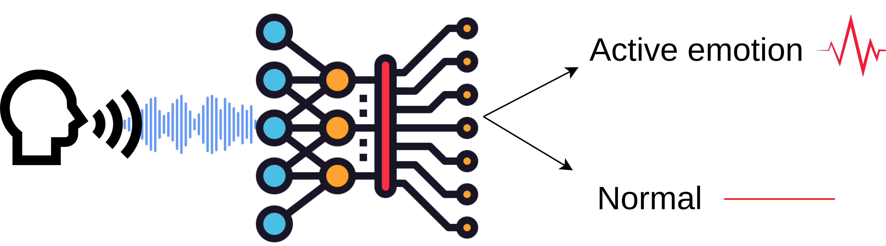
Emotions are categorized using the arousal-valence model. Arousal axis measures how active emotion is and valence measures whether emotion is positive or negative. I build a detector for the arousal axis, targeting the top region of the space, where emotions are the most active. One of the applications for such a model is to apply it to detect highlights in media content from speech.
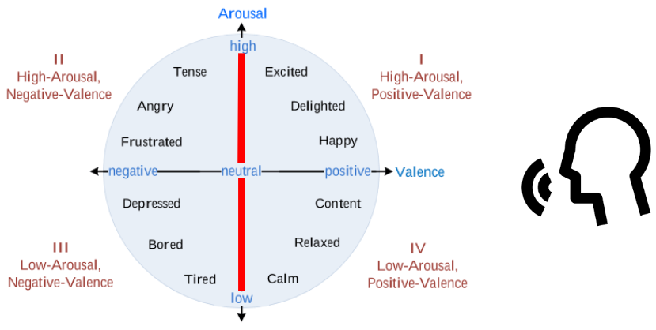
I experiment with 5 different model architectures. I train a custom CNN-Transformer model and compare it to the pretrained models from different domains, finally I train a hybrid model combining different modalities of data.
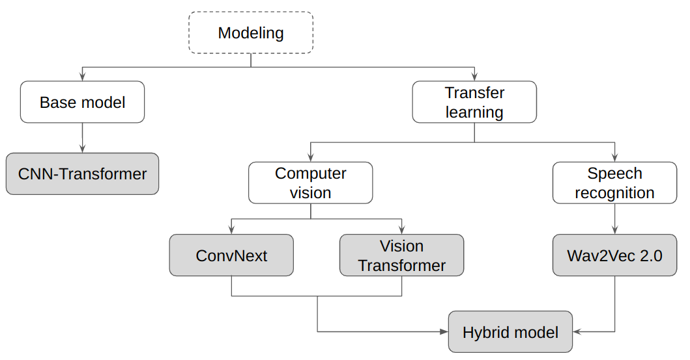
The results are in the table below:
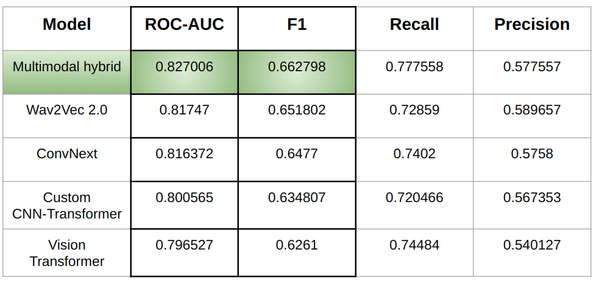
Framework for running the experiments
The source code for the framework and experiments is published in a Github repository.
For this project I developed a custom deep learning framework to configure and run the experiments, as well as to preprocess and load the data.
Most of the models in my experiments are able to learn from mini-batches of different size. For this purpose I developed a dataloader which builds mini batches from the data of similar length to avoid padding overhead.
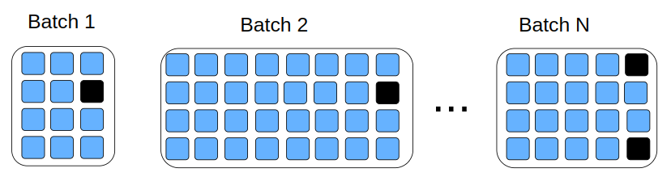
The details of the dataloader implementation are in the blog post.
To run the experiments I created class Training which is responsible for initializing and running the training from the provided TrainingConfig. Since some of the models are quite big I added the functionality of mixed precision training and gradient accumulation.
For evaluation purposes I built a module which computes such metrics as ROC-AUC, best F1 score and corresponding precision and recall.
Data
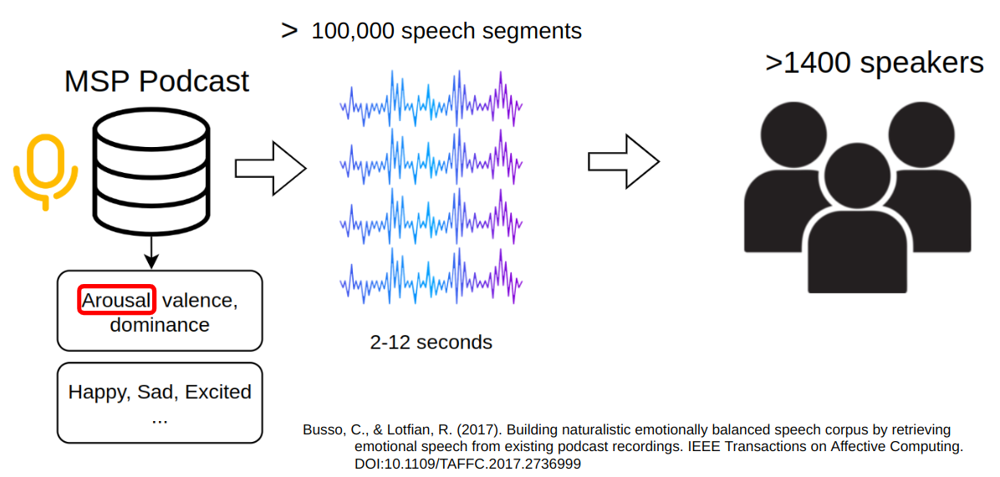
I am using the MSP-Podcast dataset. It is a large naturalistic speech emotional dataset. It consists of speech segments from podcast recordings, perceptually annotated using crowdsourcing.
I split labels into 2 categories for a binary classification task. One category contains labels corresponding to a high level of emotional activation: somewhat active, active, very active, the other contains the rest of the labels.
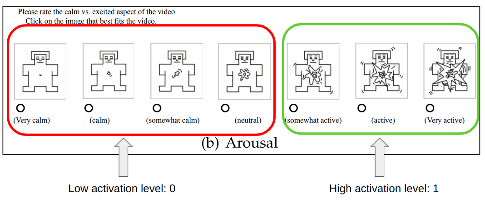
Code
data = pd.read_csv("labels_consensus.csv").set_index("FileName")data = data[data.SpkrID !='Unknown'] # segments without a speaker id are droppeddata['is_active'] = data.apply(lambda x: 1.if x['EmoAct'] >=5else0.,axis=1)def plot_label(data,label,ax=None,title=None): barc = data[label].value_counts().plot.bar(ax=ax,title=title) barc.bar_label(barc.containers[0], label_type='edge')plot_label(data, 'is_active', title='active emotions');
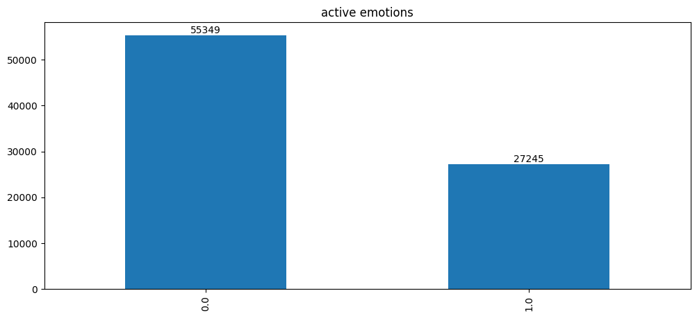
I set a limit of 500 segments for an individual speaker in order to avoid a potential overfitting to a specific speaker.
Data is grouped into buckets of similar length for more efficient batching during training.
Code
bins=20train_data['bin'] = pd.cut(train_data.dur, bins=bins, labels=range(bins))train_data.loc[train_data['bin']==19, 'bin'] =18# merge last bin due to only one recordvalid_data['bin'] = pd.cut(valid_data.dur, bins=bins, labels=range(bins))
The positive class weight is computed and it will be used in the binary cross entropy function to account for the class imbalance.
It has been demonstrated that combining convolutions and transformers achieves state of the art results under different data sizes and computational budgets. In the ViT paper the hybrid CNN-Transformer outperformed the pure transformer model for smaller computational budgets. I use CNN-Transformer architecture for the baseline model.
The model diagram:
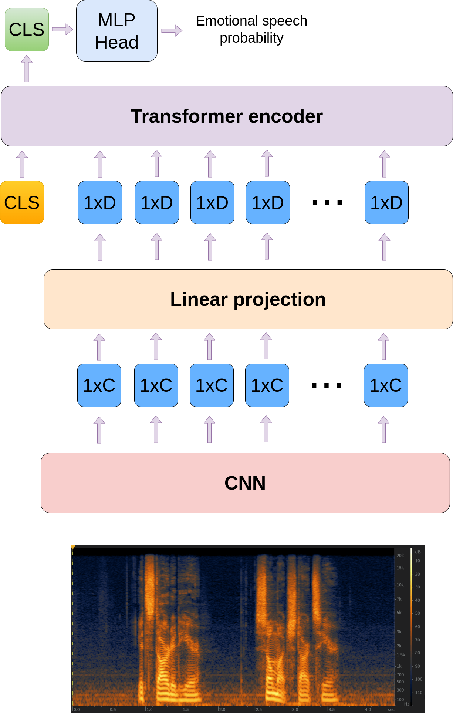
The convolutional neural network first processes F×T log mel-spectrogram and produces F’ × T’ × C feature map volume, where F represents the frequency dimension of a spectrogram and equals to the number of mel-filterbanks used, T - represents the time dimension and it equals to the number of time frames in a spectrogram, (F’,T’) is the resolution of the produced feature map and C is the number of channels. Mean pooling is then used in the frequency dimension to produce the T’C sequence of embeddings. The obtained embeddings are then mapped to dimension D of the transformer encoder. Class token embedding is added to the beginning of the sequence. The MLP classification head is then applied to the class token after the transformer encoding stage.
Prepare data
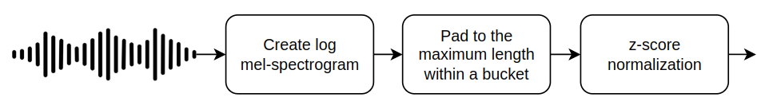
To create spectrograms I use a window size of 40ms and a hop step of 20ms with 64 mel-filterbanks. I precomputed the mean and standard deviation of the dataset, which are used for normalization. The model can be trained on a variable size data, so I split the data into buckets of similar length and create a dataloader for variable size data.
Creating the model. Here, the CNN will produce a volume with 128 channels, which means the obtained embeddings will have the size of 128. I map them to 256.
model = CustomConvTransformer(cnn,conv_emb_dim=128,target_dim=256,layers=3)
Creating the training configuration and running the experiment:
Similar to Audio Spectrogram Trasnformer approach I use DeiT model. To apply vision transformer to spectrogram data several adjustments are required.
First, spectrogram data has only 1 channel, but ViT is pretrained on images with 3 channels. It is adjusted by summing the weights of the patch embedding layer to produce the single channel.
Second, ViT is pretrained on images of different resolution, which means position embeddings need to be adjusted to the new size before fine-tuning. In the timm library it is done using 2d interpolation.
And finally, the both DeiT heads are replaced with new ones. The prediction is computed using late fusion as an average of the predictions from both heads.
More about applying vision models to spectrogram data in my blog post
Prepare data
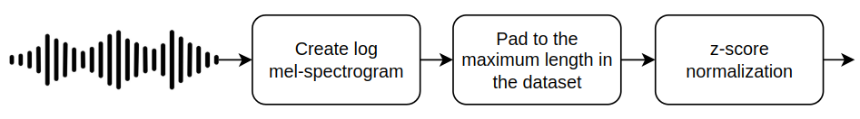
Vision transformer requires data to have fixed size due to positional embeddings. Positional embeddings have fixed size and theoretically can be interpolated during forward pass (e.g. DINOv2), but generally it is not recommended.
I’m using the ‘ConvNeXt’ model. The first layer is adjusted to spectrogram data by summing the weights of the input channels to produce a single channel. The head of the model is replaced with the fully connected layer which computes a single value for binary classification.
Prepare data
CNN models can be trained on variable size data, so similar to CNN-Transformer model I split the data into buckets of similar length and create a dataloader for variable size data.
I fine tune Wav2Vec 2.0 model. The final representation vector of an audio segment is computed as an average of the sequence of vectors produced by the model.
I add an MLP classification head on top. I keep the weights of the CNN feature encoder layer frozen, as it has been shown that it yields better results.
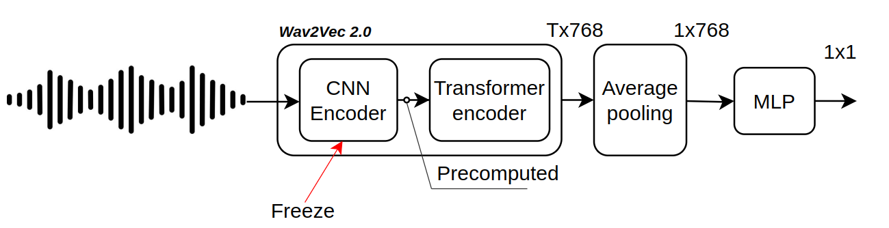
Prepare data
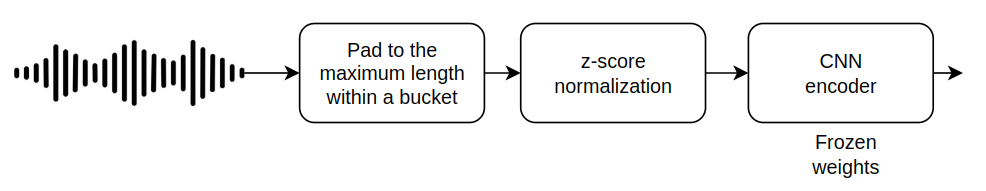
Precompute CNN features
The convolutional encoder step consumes a lot of GPU. To avoid it during training, I preprocess audio segments with CNN encoder beforehand. It is done by loading a Wav2Vec CNN feature extractor and running a forward pass on it with batches of data. The results are saved on disk.
Wav2Vec 2.0 transformer encoder is using realtive positional embeddings which allows it to process data of variable length. The preprocessed audio files were saved on disk and here I create a dataset which groups these files by length. The corresponding dataloader is created. The batch size is only 16 as it is the maximum power of 2 size which fits into Colab’s 16GB GPU memory.
Some weights of Wav2Vec2Model were not initialized from the model checkpoint at facebook/wav2vec2-base-960h and are newly initialized: ['wav2vec2.masked_spec_embed']
You should probably TRAIN this model on a down-stream task to be able to use it for predictions and inference.
100%|██████████| 3491/3491 [10:30<00:00, 5.54it/s]
100%|██████████| 892/892 [02:42<00:00, 5.50it/s]
100%|██████████| 3491/3491 [14:19<00:00, 4.06it/s]
100%|██████████| 892/892 [02:42<00:00, 5.48it/s]
100%|██████████| 3491/3491 [14:18<00:00, 4.07it/s]
100%|██████████| 892/892 [02:40<00:00, 5.56it/s]
train_loss
test_loss
auc
f1
recall
precision
0
0.932333
0.92618
0.65685
0.512447
0.671278
0.414396
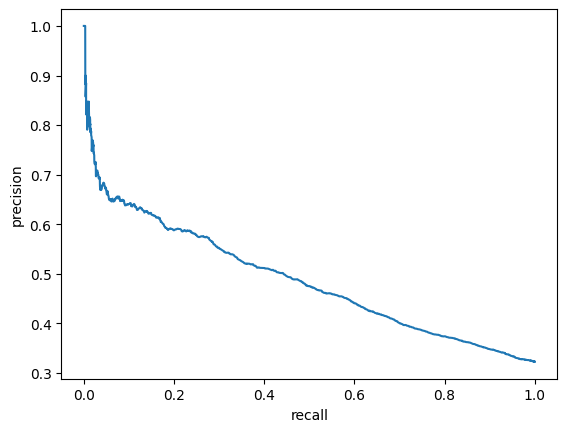
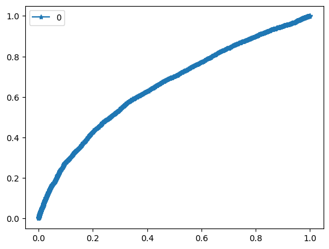
train_loss
test_loss
auc
f1
recall
precision
0
0.78635
0.738586
0.817297
0.654125
0.752086
0.578743
train_loss
test_loss
auc
f1
recall
precision
1
0.724516
0.74012
0.81747
0.651802
0.72859
0.589657
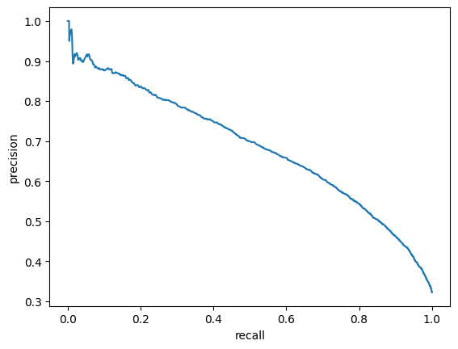
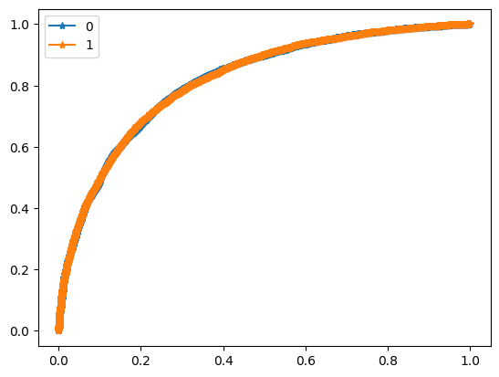
Hybrid
The hybrid model uses both: log mel-spectrograms and raw audio data. Log mel-spectrogram modality is processed by ConvNeXt model, raw audio data is processed by the Wav2Vec 2.0 model.
Both channels produce 1D vector representations of the input data. In the case of the ConvNeXt model I apply global average pooling for the obtained feature maps, for the Wav2Vec 2.0 model I average the representation vectors it produces. The obtained 1D vectors are then projected to a lower dimension, concatenated into a single vector and sent to the classification head to produce the final result. For the Wav2Vec 2.0 model I keep CNN feature encoder weights frozen.
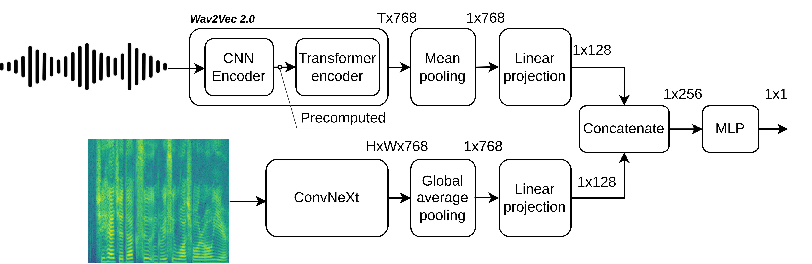
Prepare data
I create variable length datasets for both spectrogram and wav2vec data, since both models can process variable length data.
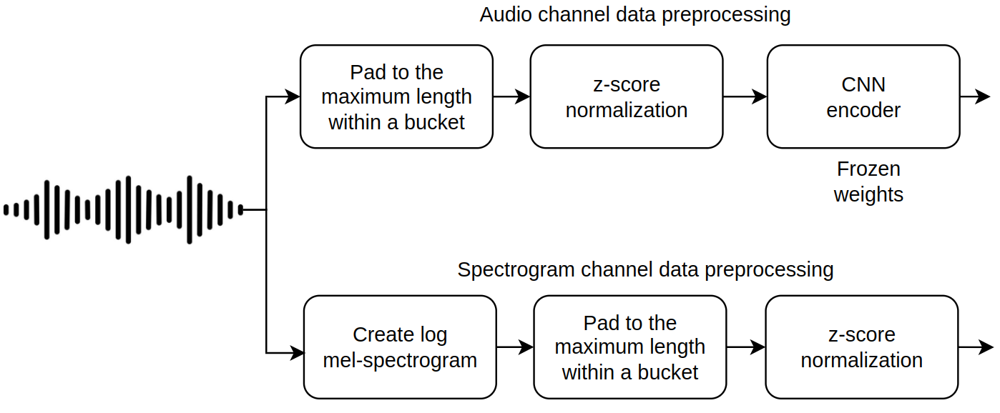
Create a dataset for wav2vec. First create raw audio dataset, then precompute CNN encoder layer outputs.
The hybrid dataset wraps spectrogram dataset and Wav2Vec dataset to produce items with 2 modalities. A variable length dataloader is created. Batch size is set to only eight items due to GPU memory limitations.
Some weights of Wav2Vec2Model were not initialized from the model checkpoint at facebook/wav2vec2-base-960h and are newly initialized: ['wav2vec2.encoder.pos_conv_embed.conv.parametrizations.weight.original1', 'wav2vec2.masked_spec_embed', 'wav2vec2.encoder.pos_conv_embed.conv.parametrizations.weight.original0']
You should probably TRAIN this model on a down-stream task to be able to use it for predictions and inference.
100%|██████████| 6972/6972 [15:24<00:00, 7.54it/s]
100%|██████████| 1775/1775 [03:54<00:00, 7.57it/s]
100%|██████████| 6972/6972 [33:03<00:00, 3.52it/s]
100%|██████████| 1775/1775 [04:00<00:00, 7.39it/s]
100%|██████████| 6972/6972 [32:59<00:00, 3.52it/s]
100%|██████████| 1775/1775 [04:01<00:00, 7.34it/s]